How to Use the Eraser and Highlighter in the Microsoft Whiteboard App (Windows 11)
This tutorial covers:
How to Select the Eraser:
How to Change Eraser Width
How to Change Eraser Stroke:
How to Select the Highlighter:
How to Change Highlighter Width
How to Change Highlighter Color:
No time to scroll down? Click through this presentation tutorial:
See a video tutorial:
How to Select the Eraser With Click
- Step 1: First switch to Inking mode. On the bottom toolbar click the “Eraser” button. 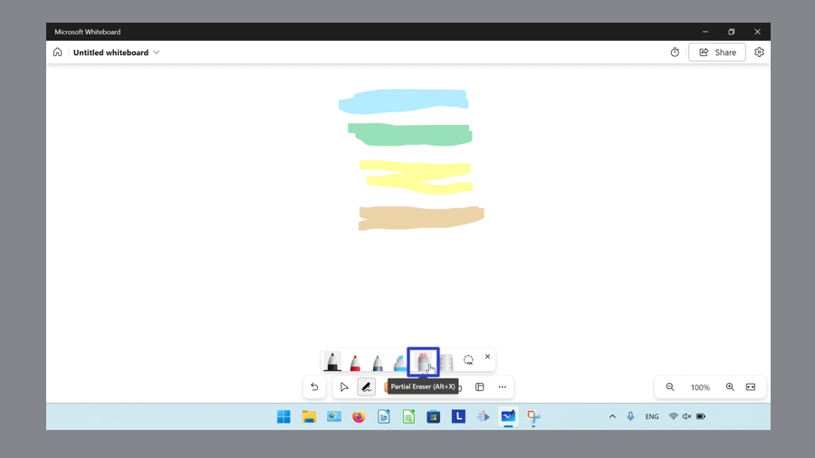
How to Select the Eraser With Keyboard
- Step 1: Open a whiteboard. On the keyboard press Alt + X. 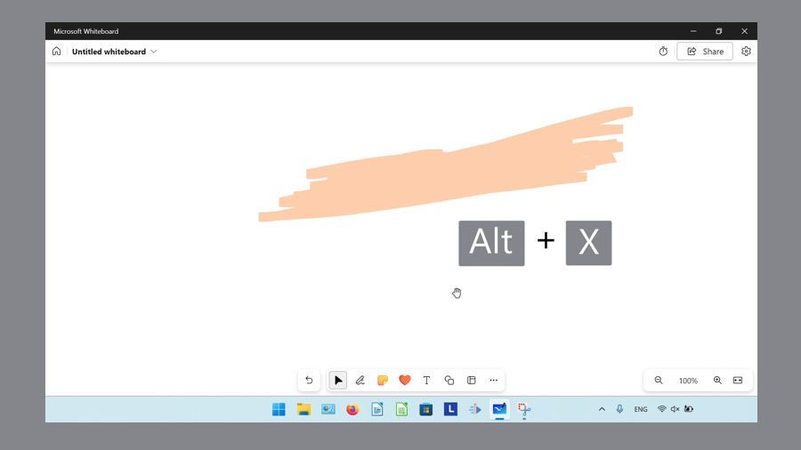
How to Change Eraser Width
- Step 1: First select the Eraser. On the canvas, click and drag the eraser back and forth rapidly. The faster the eraser moves, the larger it becomes. 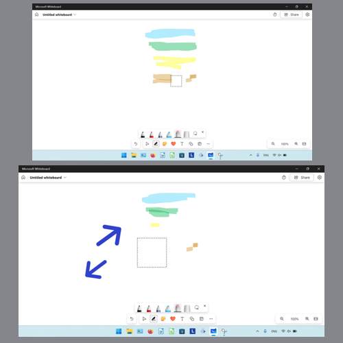
How to Erase Entire Stroke
- Step 1: Switch to Inking mode. Double click the “Eraser” button.
- Step 2: In the menu that opens, click “Erase entire stroke”. 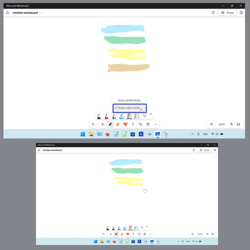
How to Erase Partial Stroke
- Step 1: First switch to Inking mode. Double click the “Eraser” button.
- Step 2: In the menu that opens, click “Erase partial stroke”. 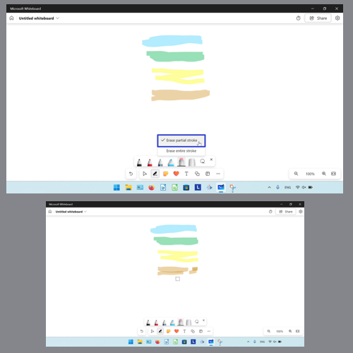
How to Select the Highlighter With Click
- Step 1: Switch to Inking mode. Click the “Highlighter” button. 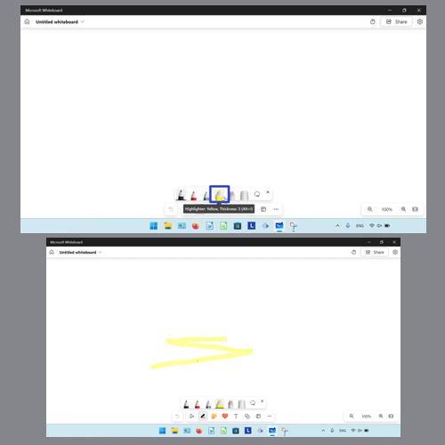
How to Select the Highlighter With Keyboard
- Step 1: First open a whiteboard. On the keyboard press Alt + I. 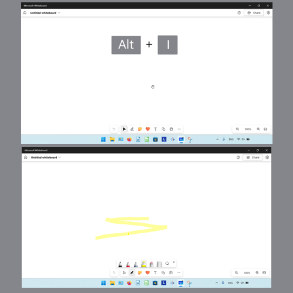
How to Change Highlighter Width
- Step 1: Switch to Inking mode. Double click the “Highlighter” button. 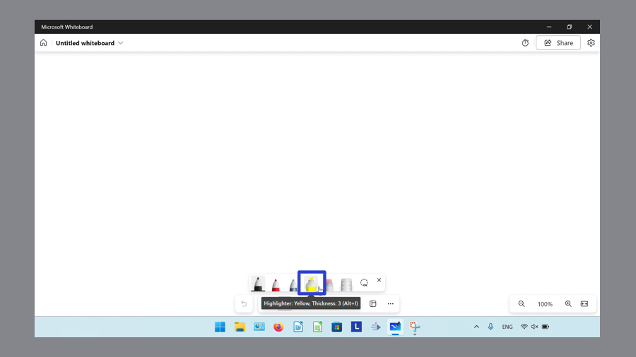
- Step 2: In the menu that opens, click and drag the slider at the top. 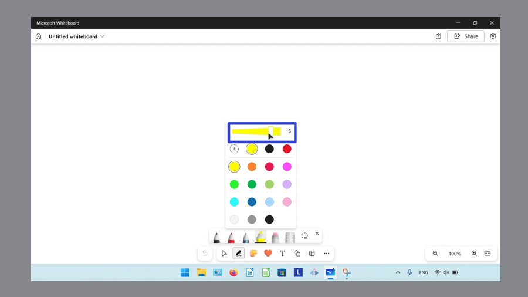
How to Change the Highlighter Color to Default Colors
- Step 1: First switch to Inking mode. Double click the “Highlighter” button.
- Step 2: In the menu that opens, click to select a color. 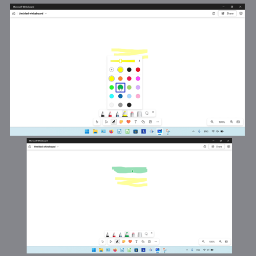
How to Change the Highlighter Color to Custom Colors
- Step 1: Switch to Inking mode. Double click the “Highlighter” button.
- Step 2: In the menu that opens, click the “More colors” button. 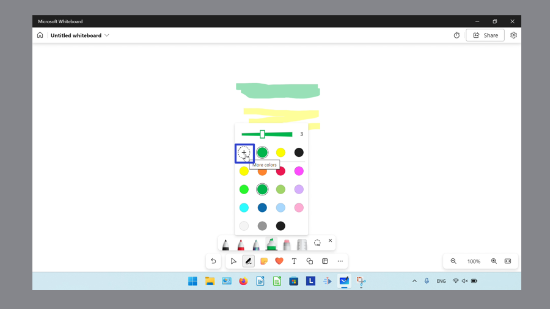
- Step 3: In the window that opens, under “Spectrum” click and drag the slider to browse different colors, then click inside the square to select a color. Alternatively, type a value in the “Hex” field. 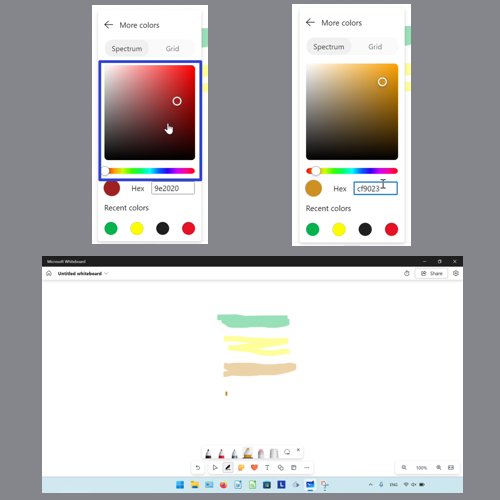
- Alternatively, click the “Grid” button and click to select a color swatch. 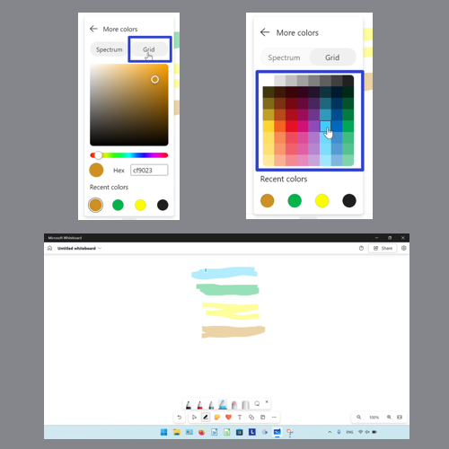
Keep a copy of these instructions for later with this free tutorial PDF.